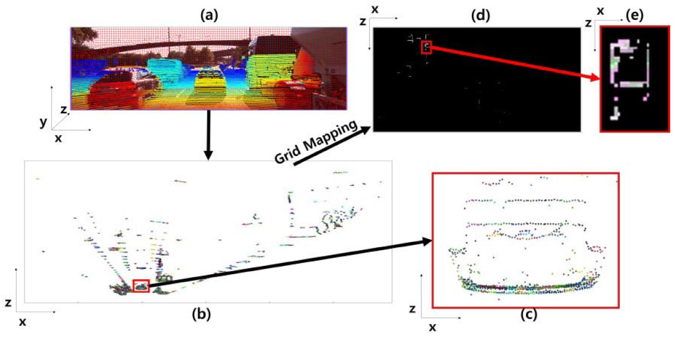

|

|
Occupancy grid filtering is important for navigation and localization in dynamic environments. The techniques that have been proposed in past research, such as the Bayesian occupancy filter and the sequential Monte Carlo Bayesian occupancy filter, involve the independent consideration of all grid cells, and thus are inaccurate and computationally expensive. To solve this problem, we propose a fast occupancy grid filtering method that uses a grid state map. We apply a superpixel-based clustering concept called a Grid Cell Cluster (GCC) to three-dimensional (3D) particles measured using LIght Detection And Ranging (LIDAR) and dense depth maps extracted from a stereo vision sensor. The GCC locates a connection among similar data items according to certain criteria. In our proposed method, a GCC consisting of several grid cells has one dynamic state. Thus, we can reduce the computational cost and the number of computational errors by using the same prediction matrices as are generated from the grid cells belonging to an object. Our method was evaluated on the KITTI benchmark dataset. The results showed that the proposed method was faster (by approximately 38.9%) than Mekahanacha�셲 method and approximately 12% more accurate (on the intersection-over-union (IoU) metric) than prevalent techniques.
Sang-Il Oh and Hang-Bong Kang
IEEE Sensors Journal, 16(19), p. 7258, 2016.10.01
[Paper] [Video] [BibTeX]
Sang-Il Oh and Hang-Bong Kang
Proceedings of the IEEE International Conference on Computer Vision Workshops (2015)
[Paper] [BibTeX]